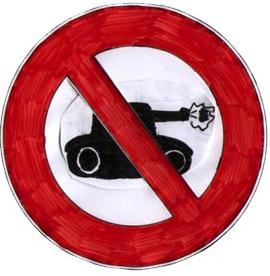

Forums galactiques > Taverne galactique : lieu de discussion informel > Une idée?
Oui, il est temps que nous jeune commandant puissions évoluer | 16 | |
Non, hors de question chaccun pour sa peau les petits cdts peuvent aller se faire ***** | 23 | |
Sans opinion, ce sondage ne m'inspire auccunement | 14 | |
Total : 53 vote(s) | ||
Pages : 1
| Rolf68 Réputation à la taverne : 0  21/02 ETU 18:33 | Score : 0 Détails Salutation,
Il me semble que cela est ma premier apparition. Voic ma question auquel vous pouvez répondre d'une partie déjà a l'aide du sondage: Dieu pourrait il créer des systemes ou les jeunes cdts sont les seul a pouvoir y entrer pour pouvoir s'enrichir avant que des cdts plus expérimenté n'arrivent en bousculant tout le monde avec leurs Croiseur lourd hyperatomique (c'est le vaisseau le plus chere a la contrebande donc je suppose que c'est le meilleur) | ||
| Chonga_ Réputation à la taverne : 41  21/02 ETU 18:35 | Score : 0 Détails Les nouveaux commandants sont déjà protégés car il faut qu'un commandant dans votre système natal ait découvert l'hyperfusion pour que quelqu'un puisse venir dans ce système, si vous attendez tous avant de l'avoir vous pouvez vous développer.
Cordialement, Chonga_ | ||
| Alex Rider Réputation à la taverne : 748  21/02 ETU 18:37 | Score : 0 Détails Chonga a raison, je ne vois pas ce qui vous chagrine...
| ||
| Rolf68 Réputation à la taverne : 0 21/02 ETU 18:42 | Score : 0 Détails Ce qui me chagrine mon chere je parle des autres systemes ouvert (les nombres paires)
| ||
| Eriol Réputation à la taverne : 190  21/02 ETU 18:45 | Score : 0 Détails HRP/Comment définie tu un commandant experimenté d'un autre?
Tout commandant qui a des problémes peu demandé de l'aide à l'assemblé, signer les traités de paix et tout sa. Un commandant ayant joué dans toutes les galaxies qui joue comme un bourrin ne peut rien faire contre un commandant nouveaux qui a réussie à se faire des alliés dans l'assemblée. Bien sur des AMIs que tu connais IRL peuvent t'aider, tu peut avoir de l'experience et tout.Mais le jeu en lui même n'est pas trés compliqué. La partie la plus dire est sur les forums mais même des commandants ayant une grande éxperience ne le savent pas. Un commandant qui débarque dans l'assemblée pour demander de l'aide est assez souvent mal vue. Un squatter de la taverne qui passe son temps a essayer les fauteuils de l'assemblée est trés dur a attaquer sans que d'autres l'aide et que le conflit prenne une grande dimension. C'est pour sa que j'ai repondue NON. ps:il y'a un fofo externe qui est trés bien pour sa. Il permet surtout de discuter du sujet avec les commandants des autres galaxies. Edit apres avoir lue les autres messages: Précise un peu ton truc s'il te plait, je vois pas de quoi tu causes | ||
| Asurmen Réputation à la taverne : 137  21/02 ETU 19:16 | Score : 0 Détails Ce sondage est du n'importe quoi.
Comme il a été déjà dit précédemment, il fallait vous renseigner à l'avance sur les règles de début de partie et en particulier sur l'hyperfusion. | ||
| Eriol Réputation à la taverne : 190 21/02 ETU 19:28 | Score : 0 Détails Si tu parles des commandants qui prennent les systémes vides avant toi, il n'est pas question de puissance mais de temps de jeu.
A part sa, je ne comprend toujours pas ce que tu veut dire. | ||
| Rolf68 Réputation à la taverne : 0 21/02 ETU 19:48 | Score : 0 Détails Je recommence...
Vous savez tous que lorsqu'un commandant nouveau decide de decouvrir l'hyperfusion il ouvre a la foi un autre system, qui est censé etre pour ce occupant ce system avec lui, Cependant il se trouve que des cdt experimenté compte tous conquerir exacte le systeme n'appartient a personne mais il est destiné pour les nouveaux selon moi. Est ce que cette fois ais-je était assé claire sinon je vais avoir l'impression de parlé a des analphabetes. Mes premiers messages n'étais pas assez claire ok, là vous avez du avoir compri. Rolofo | ||
| Asurmen Réputation à la taverne : 137 21/02 ETU 19:51 | Score : 0 Détails Excuse moi de te le dire, mais pour l'instant, l'analphabète, c'est toi.
| ||
| dechiketeur Réputation à la taverne : 111  21/02 ETU 19:57 | Score : 0 Détails Rolf68, ton idée est pitoyable, comment veux tu progressé si tous les petits ont tout tout de suite ?
C'est nul comme idée ! Tu serais pas un pacifiste qui cherche juste à se faire des tunes sans bouger son c** ? | ||
| Asurmen Réputation à la taverne : 137 21/02 ETU 19:58 | Score : 0 Détails Dechiketeur, votre définition de cette idée, complète la mienne.
Merci. | ||
| Mward Réputation à la taverne : 5  21/02 ETU 20:11 | Score : 0 Détails Euh non, tout faux Rolf, quand tu ouvres ton système, tu n'ouvres pas l'impaire d'avant...
+1 Asurmen et dechiketeur, ces systèmes ne sont pas pour ceux qui occupent celui d'après. | ||
| Alex Rider Réputation à la taverne : 748 21/02 ETU 21:13 | Score : 0 Détails Oui, et je précise que c'est Dieu qui ouvre les systèmes pairs.
| ||
| Michiru Juuno Réputation à la taverne : 90  21/02 ETU 21:40  | Score : 0 Détails (HRP) Dieu se pose des questions sur ce mécanisme. Voyez
http://matthieu.robin.free.fr/phpBB2/viewtopic.php?t=778 les points de vues multiples peuvent enrichir cette discussion. | ||
| Gemnoth-Sinn Réputation à la taverne : 358  22/02 ETU 11:09 | Score : 0 Détails L'hologramme materialisa un homme a la stature imposante//
Je tiens a signaler a vous, commandants experimentés, que, sans avoir découvert l'hyperfusion nous nous retrouvons a 4 dans le mème système. Si quelqu'un peut m'expliquer ce "miracle" et comment parer au cas ou un adversaire découvre l'hyperfusion avant tout le monde (je suis le dernier arrivé en supposant que tout les joueurs sont débutants), je serait ravi de l'entendre. //une lumière clignotante indiqua la fin de la transmission. | ||
| Alex Rider Réputation à la taverne : 748 22/02 ETU 12:29 | Score : 0 Détails Il s'agit de commandants qui commencent dans la Galaxie, tout comme vous.
Pour parer une découverte accidentelle de l'hyperfusion, c'est très simple: envoyez un MP d'avertissement à chacun des commandants qui est avec vous. Adversaire ou pas, il n'ont pas envie de se faire attaquer dès le début... | ||
| Asurmen Réputation à la taverne : 137 22/02 ETU 14:11 | Score : 0 Détails Si chaque commandant débutant avait un système à lui tout seul dès le départ, ils seraient tous égaux, sans distinction apparentes et le nombre de systèmes serai incomptable.
| ||
| Armageddon For ALL Réputation à la taverne : 212  22/02 ETU 14:20 | Score : 0 Détails HRP
Je pense que les nouveaux Commandants (et meme les plus puissants ont commencé un jour comme nouveau) ont un arsenal de défense à leur actif: - pas d' hyperfusion avant de se stabiliser et renforcer (système fermé de l' intérieur). - si vous etes plusieurs dans le système, croyez moi, des MP de bienvenue et d' entente entre vous sont préférables et pourtant rarement fait. Vous aurez tout le temps après de vous étendre ailleurs. - Assemblée et taverne pour obtenir de l' aide (pas mal de Commandants ne tolèrent pas le massacre des nouveaux). C' est la diplomatie active et tout l' intéret d' apocalypsis par rapport à d' autres jeux. - les coalitions offrent et garantissent une protection de leurs membres (meme si ceux ci sont nouveau). Un détail échappe des fois à certains, controler TOUT un système dans son entier permet à des adversaires de tirer des BHA sans dommages collatéraux ... vous etes tout seul, croyez moi, avoir des voisins qui plus tard feront partie peut etre de grosses coalitions oblige à réfléchir à 2 fois avant de tirer ses BHA .... tant dit que si vous etes tout seul ... Bref pour les fanas de solitude qui éradiquent tous leurs voisins dès le départ, cela peut etre plus tard, une décision stratégique lourde de conséquences. Tout le monde commence déjà à égalité dès le départ, avec une planète, le reste est question de vitesse, choix, stratégie etc ... hors de question de remettre en cause ce système pour ma part. Etant un vieux briscard de la G1 ou je n' y est que 12 planètes, j' y joue pourtant un role important et de poids sans JAMAIS avoir subit une seule attaque. Uniquement grace à mon RP, pas à ma fortune ni à mes planètes. Je pense que les nouveaux Commandants sont protégés. Si un "vieux" balayait au BHA un système ou se trouve uniquement des ptits nouveaux comme vous l' imaginez et le redoutez Rolf68 dans votre premier message ... lol ... je peux vous assurer que ce gars là, à intéret à surveiller ses fesses ... /HRP | ||
| Seigneur Hicham Réputation à la taverne : -25  24/02 ETU 00:26 | Score : 0 Détails donc si des nouveau cmdt sont dans le meme system un seul survivera c'est cze qui arrive depuis tjr jai de la chance d'avoir gagner 3 adversaire allier contre moi!!!!!
|
Pages : 1
Forums galactiques > Taverne galactique : lieu de discussion informel > Une idée?